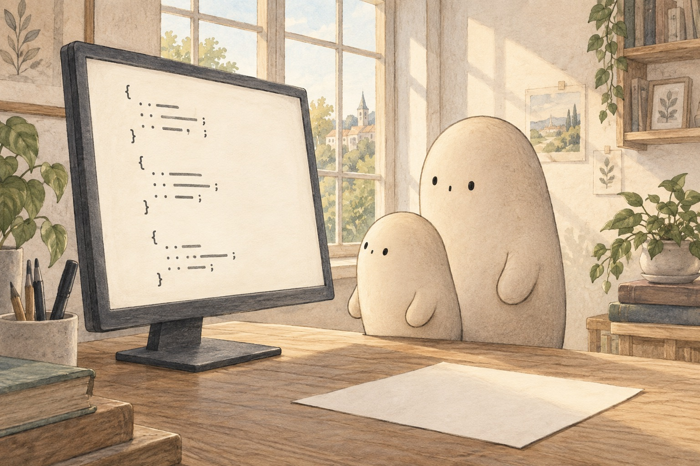

LOOK CLOSELY · 01
What could these quiet marks be for?
Look at the screen. Are the marks scattered, or lined up? Find where Little's eyes rest first.
A little explanation & something to try
The marks look like a secret language. They are instructions — tiny written jobs a machine can follow. Alone, one mark does almost nothing. Together in a list, they can build something new.
Try this. Point to one mark, then the next. What changes if you skip one in the middle?